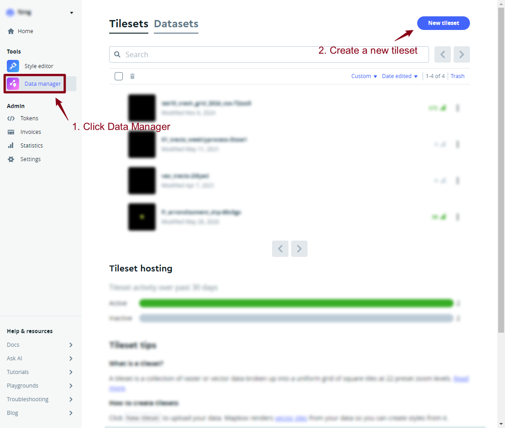

Lab 5: Intro to Interactive Mapping (Part I)
Overview
This Lab provides an introduction to basic Interactive mapping techniques using Leaflet and Mapbox. The aim is to provide an overview of techniques that you can use in your own spatial data visualizations. All the mapping software libraries discussed here have good online tutorials where you can explore further mapping examples beyond this lab:
- http://leafletjs.com/examples.html
- https://leafletjs.com/reference-1.6.0.html
- https://www.mapbox.com/help/tutorials/
- https://www.mapbox.com/mapbox-gl-js/example/simple-map/
- https://www.mapbox.com/mapbox-gl-js/api
And for a general HTML and JavaScript reference, a good site is:
Submission
Please carefully read the instruction and play with the 6 examples. The zip file with Lab 5 materials can be found here: https://github.com/fuzhen-yin/uccs_cartography/blob/main/lab_materials/lab5.zip. (Don’t know how to download the data? Please read: Lab 4 - Overview)
At the end of the lab, you are required to:
- Replicate “Leaflet_Example4.html” to a different study area and use symbols (i.e., markers, polygons, circles) to illustrate a topic of interests with popup functions.
- Replicate “Mapbox_example6.html” using the same flow data but with different mapping styles.
Please submit a zip with two .html files and any supporting documents (e.g., images) to Canvas.
Good Practice
- Let’s first navigate to the course folder, and create a folder called lab5.
- You will need to use the HTML text editor (e.g. Brackets; Sublime Text) that you installed last week. The lab’s computers have Brackets installed.
Leaflet.js Examples
Leaflet is a very popular open source library for online interactive maps. It is lightweight and straightforward to use, and is ideal for simpler mapping sites. The API and documentation for Leaflet.js can be found here
Example 1
Below is a simple html page to create an interactive map with OpenStreetMap data (same example as last week). You can zoom around and the map layer will update.
The important parts of the code are as follows:
- The Leaflet.js library is loaded in the
<head>part of the page, using the<script>tag. - Secondly the leaflet stylesheet is also requested
using the
<link>tag. The stylesheet controls the layout of different elements, and ensures the map and map controls appear in the right place on the page. - The map itself is created in the
<body>part of the page using a<div>tag to specify the size and location of the map element, and a<script>that calls the Leaflet commands to create the map. AL.mapvariable is invoked, specifying the latitude, longitude and zoom level of the map in thesetviewattributes. Then theL.tileLayercommand specifies what data will be used as the background layer, linking to a set of tiles on an online map server. Here we request the OpenStreetMap raster tiles layer, and add this layer to the map.
<html>
<head>
<title>Leaflet Example 1</title>
<link rel="stylesheet" href="https://unpkg.com/leaflet@1.9.4/dist/leaflet.css"
integrity="sha256-p4NxAoJBhIIN+hmNHrzRCf9tD/miZyoHS5obTRR9BMY="
crossorigin=""/>
<script src="https://unpkg.com/leaflet@1.9.4/dist/leaflet.js"
integrity="sha256-20nQCchB9co0qIjJZRGuk2/Z9VM+kNiyxNV1lvTlZBo="
crossorigin=""></script>
<style>
body { margin:0; padding:0; }
#mapdiv { position:absolute; top:0; bottom:0; width:100%; }
</style>
</head>
<body>
<div id="mapdiv"></div>
<script>
var mymap = L.map('mapdiv').setView([38.8928, -104.8036], 16);
L.tileLayer('http://{s}.tile.openstreetmap.org/{z}/{x}/{y}.png', {
maxZoom: 18,
attribution: 'Map data © <a href="http://openstreetmap.org">OpenStreetMap</a>'
}).addTo(mymap);
</script>
</body>
</html>
Note that in the code we are combining a variable declaration, instantiating the L.map object, and running the setView method in the same statement:
var mymap = L.map('mapdiv').setView([38.8928, -104.8036], 16);
This statement can alternatively be split into two lines, performing the same tasks:
var mymap = L.map('mapdiv');
mymap.setView([38.8928, -104.8036], 16);
Save this file as example1.html.
When you double click on the html file you have created, it should open in your default web browser software, and show a map as the image below.
Example 2
It’s possible to swap the tileLayer for another raster map layer that you want to use, for example a Carto All Black tilelayer (also created using OpenStreetMap data):
<html>
<head>
<title>Leaflet Example 2</title>
<link rel="stylesheet" href="https://unpkg.com/leaflet@1.9.4/dist/leaflet.css"
integrity="sha256-p4NxAoJBhIIN+hmNHrzRCf9tD/miZyoHS5obTRR9BMY="
crossorigin=""/>
<script src="https://unpkg.com/leaflet@1.9.4/dist/leaflet.js"
integrity="sha256-20nQCchB9co0qIjJZRGuk2/Z9VM+kNiyxNV1lvTlZBo="
crossorigin=""></script>
<style>
body { margin:0; padding:0; }
#mapdiv { position:absolute; top:0; bottom:0; width:100%; }
</style>
</head>
<body>
<div id="mapdiv"></div>
<script>
var mymap = L.map('mapdiv').setView([38.8928, -104.8036], 16);
L.tileLayer('https://{s}.basemaps.cartocdn.com/rastertiles/voyager/{z}/{x}/{y}{r}.png', {
maxZoom: 18,
attribution: '© <a href="https://www.openstreetmap.org/copyright">OpenStreetMap</a> contributors © <a href="https://carto.com/attributions">CARTO</a>'
}).addTo(mymap);
</script>
</body>
</html>
Save this file as example2.html.
When you double click on the html file you have created, it should open in your default web browser software, and show a map as the image below.
Example 3
So far we have created the background layer to our map. Typically, we
want to add some location data in the foreground. One
simple method of doing this is to hand-code location
data in our script, as the example below shows using the
commands L.marker , L.circle and
L.polygon .
<html>
<head>
<title>Leaflet Example 3</title>
<link rel="stylesheet" href="https://unpkg.com/leaflet@1.9.4/dist/leaflet.css"
integrity="sha256-p4NxAoJBhIIN+hmNHrzRCf9tD/miZyoHS5obTRR9BMY="
crossorigin=""/>
<script src="https://unpkg.com/leaflet@1.9.4/dist/leaflet.js"
integrity="sha256-20nQCchB9co0qIjJZRGuk2/Z9VM+kNiyxNV1lvTlZBo="
crossorigin=""></script>
<style>
body { margin:0; padding:0; }
#mapdiv { position:absolute; top:0; bottom:0; width:100%; }
</style>
</head>
<body>
<div id="mapdiv"></div>
<script>
var mymap = L.map('mapdiv').setView([38.8928, -104.8036], 16);
L.tileLayer('https://{s}.basemaps.cartocdn.com/rastertiles/voyager/{z}/{x}/{y}{r}.png', {
maxZoom: 18,
attribution: '© <a href="https://www.openstreetmap.org/copyright">OpenStreetMap</a> contributors © <a href="https://carto.com/attributions">CARTO</a>'
}).addTo(mymap);
var marker = L.marker([38.898586, -104.805672]).addTo(mymap);
var circle = L.circle([38.889592, -104.791615], {
color: 'red',
fillColor: '#f03',
fillOpacity: 0.5,
radius: 200
}).addTo(mymap);
var polygon = L.polygon([
[38.89569833939097, -104.80627386295626],
[38.89186674552239, -104.80462559978713],
[38.89083179638379, -104.79364069793745]
]).addTo(mymap);
</script>
</body>
</html>
Save this file as example3.html.
When you double click on the html file you have created, it should open in your default web browser software, and show a map as the image below.
Example 4
Now, we add popup interactivity to the map by using the functions
bindPopup and openPopup. It follows the same
html syntax when adding hyperlink such as
<a href='https://www.uccs.edu/'>Link to UCCS</a>.
<html>
<head>
<title>Leaflet Example 4</title>
<link rel="stylesheet" href="https://unpkg.com/leaflet@1.9.4/dist/leaflet.css"
integrity="sha256-p4NxAoJBhIIN+hmNHrzRCf9tD/miZyoHS5obTRR9BMY="
crossorigin=""/>
<script src="https://unpkg.com/leaflet@1.9.4/dist/leaflet.js"
integrity="sha256-20nQCchB9co0qIjJZRGuk2/Z9VM+kNiyxNV1lvTlZBo="
crossorigin=""></script>
<style>
body { margin:0; padding:0; }
#mapdiv { position:absolute; top:0; bottom:0; width:100%; }
</style>
</head>
<body>
<div id="mapdiv"></div>
<script>
var mymap = L.map('mapdiv').setView([38.8928, -104.8036], 16);
L.tileLayer('https://{s}.basemaps.cartocdn.com/rastertiles/voyager/{z}/{x}/{y}{r}.png', {
maxZoom: 18,
attribution: '© <a href="https://www.openstreetmap.org/copyright">OpenStreetMap</a> contributors © <a href="https://carto.com/attributions">CARTO</a>'
}).addTo(mymap);
var marker = L.marker([38.898586, -104.805672]).addTo(mymap);
var circle = L.circle([38.889592, -104.791615], {
color: 'red',
fillColor: '#f03',
fillOpacity: 0.5,
radius: 200
}).addTo(mymap);
var polygon = L.polygon([
[38.89569833939097, -104.80627386295626],
[38.89186674552239, -104.80462559978713],
[38.89083179638379, -104.79364069793745]
]).addTo(mymap);
polygon.bindPopup("Hello World! <br> This is the Main Campus of UCCS. <br> <a href='https://www.uccs.edu/'>Link to UCCS</a>").openPopup();
marker.bindPopup("A marker showing the Roaring Fork dining hall")
circle.bindPopup("Here is the UCCS Farm!")
</script>
</body>
</html>
Save this file as example4.html.
When you double click on the html file you have created, it should open in your default web browser software, and show a map as the image below.
Example 5
Hand-coding location features is not a good way to handle larger datasets. We can add medium sized spatial datasets using the GeoJSON format, a popular text-based format for exchanging vector spatial data in JavaScript Object Notation. See geojson.org for more information.
You can create GeoJSON files easily in QGIS or ArcGIS from any spatial data file (“Export->Save Features As” for QGIS, or “Output to GeoJSON” for ArcGIS ). Alternatively Google “convert to geojson” and you can find a lot of online data converters.
We will discuss importing data files on the web using APIs later in the course. The easiest way to add a GeoJSON file to a Leaflet map is:
To convert a GeoJSON file to a .js file. Please wrap the GeoJSON data inside the square brackets
var myvariablename = [ COPY_PASTE_GEOJSON_HERE];(see theelpaso_2022_waterbody_area.jsexample file included in the lab materials).
To view the elpaso_2022_waterbody_area.js, right
click and open with any text editors (e.g.,
Brackets, Sublime Text, or Notepad.)
To load an external GeoJSON file without editing, you need to add
some asynchronous data loading functionality to Leaflet, such as the
Leaflet AJAX plugin or using JQuery. The example below loads the file
elpaso_2022_waterbody_area.js a local file with the address
shown in the code below.
<script src="elpaso_2022_waterbody_area.js"></script>
This example adds some water body data (from the
elpaso_2022_waterbody_area.js file) on top of our
background map. The water bodies were added using the
L.geoJson constructor. The function
onEachFeature runs for each feature, which is styled using
the layer.setStyle command in the code.
<html>
<head>
<title>Leaflet Example 5</title>
<link rel="stylesheet" href="https://unpkg.com/leaflet@1.9.4/dist/leaflet.css"
integrity="sha256-p4NxAoJBhIIN+hmNHrzRCf9tD/miZyoHS5obTRR9BMY="
crossorigin=""/>
<script src="https://unpkg.com/leaflet@1.9.4/dist/leaflet.js"
integrity="sha256-20nQCchB9co0qIjJZRGuk2/Z9VM+kNiyxNV1lvTlZBo="
crossorigin=""></script>
<script src="elpaso_2022_waterbody_area.js"></script>
<style>
body { margin:0; padding:0; }
#mapdiv { position:absolute; top:0; bottom:0; width:100%; }
</style>
</head>
<body>
<div id="mapdiv"></div>
<script>
var mymap = L.map('mapdiv').setView([38.859717, -104.801512], 12);
L.tileLayer('https://{s}.basemaps.cartocdn.com/rastertiles/voyager/{z}/{x}/{y}{r}.png', {
maxZoom: 18,
attribution: '© <a href="https://www.openstreetmap.org/copyright">OpenStreetMap</a> contributors © <a href="https://carto.com/attributions">CARTO</a>'
}).addTo(mymap);
var water_js = new L.geoJson(water_area,{
onEachFeature: onEachFeature
}).addTo(mymap);
function onEachFeature(feature, layer){
layer.setStyle({
fillColor:'skyblue',
fillOpacity: 0.5,
weight:1,
color:'darkblue',
opacity:1
})
}
</script>
</body>
</html>
Save this file as example5.html.
When you double click on the html file you have created, it should open in your default web browser software, and show a map as the image below.
The GeoJSON approach will work for relatively
small spatial data files of a few megabytes. When your
files get larger then this text based approach will not scale and the
website performance will be slow. You will need to use a different
scalable approach like vector tiles,
so that the spatial data is selected depending on the location and zoom
level that the user is viewing.
If you want to add interactivity and further features to your Leaflet map, then you can follow the online tutorials here: https://leafletjs.com/examples.html
Mapbox Introduction
- Go to Mapbox.com (you will need to create a free account if you haven’t already), login and click on Data Manager on the left. Then click on New Tileset, and Select a File.
- Select the data file
JTW_GB_MSOAflows_2011_50plus.zipdownloaded from Lab 5 materials
There will be a delay while the file is uploaded and processed into
Mapbox vector tiles. When it is complete, you will get a notification
saying the upload has succeeded, and there will be a new Tileset on the
page with a name like JTW_GB_MSOAflows_2011_50plus-xxx.
Click on it to see the details.

This
Tileset page has important information such as the Map
ID and the name (which are used to show this
layer in an HTML page using mapbox.gl).
- It also has the zoom extent of the layer. There is a maximum number of features that can be included in each vector tile, and as you zoom out eventually you hit this limit and the layer is no longer displayed.
- The vector tiles include the attribute information (columns) from the shapefile, so one quick way to minimize the problem of too narrow a zoom extent is to limit the number of attributes in the original shapefile.
A more advanced way is to use the Mapbox software Tippecanoe to control how features are dropped at low zoom levels, allowing a wider zoom extent.
Designing a Flowmap in Mapbox Studio
Now we are going to create a map of the flow data in Mapbox studio. Each map design is called a style in Mapbox. - Click on the Style Editor on the left panel. Then the arrow near New Style button to create a new style using Classic Template.
There are a wide selection of style templates to choose from, mainly using OpenStreetMap (OSM) data. It is interesting to explore these different styles for different projects, with the minimalist Monochrome styles generally the default for data visualizations. For this example, we want to use the Monochrome- Dark style.
You will then be taken to the Mapbox studio interface for designing background mapping. On the left hand side are all the OSM layers, and on the right hand side is the appearance of the map design (just like in GIS software).
- Navigate the map to center on the UK.
- Press the Add Layer button (or the
+ symbol) at the top left to add a Custom
Layer using journey-to-work flows Tileset we
created earlier (under the name
JTW_GB_MSOAflows_2011.
When added, the flows layer will appear on the left-hand layers panel. Next we are going to style this layer. Click on the layer itself, the style panel will appear.
- Firstly, change the color to something bright like cyan or orange.
- Next create a rule to vary the width of the flow lines according to the number of commuters. To do this, click on Width and Style across Data Range. This allows you to vary the style properties according to a numerical attribute.
- We want the width to increase as the number of commuters increases. Edit the stop so that the width increases to about 8px when the number of commuters reaches 500. -Next, we want to edit the opacity so that the map highlights areas where many features overlap. Please play with the opacity values until you think it the map looks good.
You can make many more adjustments to improve your map. For example:
- it makes sense to put the flow data layer below the city labels to improve legibility (hint: click & drag)
- By default, Mapbox displays labels for small towns. You can change this to only showing large cities by changing the filter on the settlement-label layer under the place-labels layer.
- You can also make the background darker (land layers) to increase the map contrast;
- and you can hide unwanted layers like roads by using the eye icon at the top left to reduce the clutter of the map.
Your final map should appear similar to the map below.
Publishing Your Flowmap
It makes sense to rename the style into something more descriptive than Monochrome’, for example UK_Flow Map. The Publish button at the top right will save your style edits.
Then press the Share button. This includes a Preview URL to view your style. It is better to use the Developer resources to use this map style on your own HTML page.

Example 6
This is shown in ‘Mapbox_example6.html’. To view your own style, you will need to insert your access token and your Style URL in the example 6 code as shown below. Please submit the .html file of your final stylized flow as part of your Lab 5 assignment.
<html>
<head>
<meta charset="utf-8" />
<title>Mapbox Example 6- UK Flowmap 2011</title>
<meta name="viewport" content="initial-scale=1,maximum-scale=1,user-scalable=no">
<link href="https://api.mapbox.com/mapbox-gl-js/v3.10.0/mapbox-gl.css" rel="stylesheet">
<script src="https://api.mapbox.com/mapbox-gl-js/v3.10.0/mapbox-gl.js"></script>
<style>
body { margin: 0; padding: 0; }
#map { position: absolute; top: 0; bottom: 0; width: 100%; };
</style>
</head>
<body>
<div id="map"></div>
<script>
mapboxgl.accessToken = 'YOUR_MAPBOX_ACCESSTOKEN'; //Mapbox Accesstoken
var map = new mapboxgl.Map({
container: 'map', // container id
style: 'mapbox://styles/YOUR_MAPBOX_STYLE_URL', // stylesheet URL, the style that you've created
center: [-2.855366, 53.273659], // starting position [lng, lat]
zoom: 6 // starting zoom
});
</script>
</body>
</html>
Save this file as example6.html.
When you double click on the html file you have created, it should open in your default web browser software, and show a map as the image below.
Good Job on Lab 5!
Please submit a zip with two .html files and any supporting documents (e.g., images) to Canvas.
- One .html file to replicate “Leaflet_Example4.html” to a different study area and use symbols (i.e., markers, polygons, circles) to illustrate a topic of interests with popup functions.
- One .html file to replicate “Mapbox_example6.html” using the same flow data but with different mapping styles.